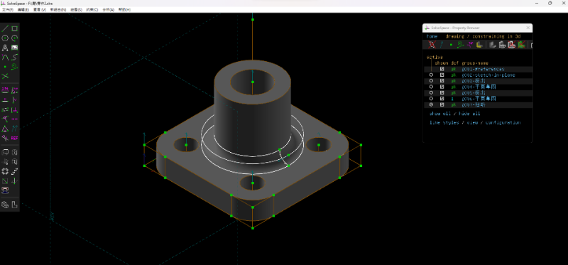

12張圖的檔案 /downloads/零件檔.7z
/downloads/圖.stl
https://youtu.be/nxbdvnQ9FEE
https://mdecad2024.github.io/hw-ych0227/cmsimde/static/viewstl.html?src=https://s104.cycu.org/~41223240/圖.stl
練習2
/downloads/零件2.stl
https://mdecad2024.github.io/hw-ych0227/cmsimde/static/viewstl.html?src=https://s104.cycu.org/~41223240/零件2.stl

練習3
/downloads/零件3.stl
https://mdecad2024.github.io/hw-ych0227/cmsimde/static/viewstl.html?src=https://s104.cycu.org/~41223240/零件3.stl
練習4
https://mdecad2024.github.io/hw-ych0227/cmsimde/static/viewstl.html?src=https://s104.cycu.org/~41223240/零件4.stl
練習5
https://mdecad2024.github.io/hw-ych0227/cmsimde/static/viewstl.html?src=https://s104.cycu.org/~41223240/零件5.stl
練習6
https://mdecad2024.github.io/hw-ych0227/cmsimde/static/viewstl.html?src=https://s104.cycu.org/~41223240/零件6.stl
練習7
https://mdecad2024.github.io/hw-ych0227/cmsimde/static/viewstl.html?src=https://s104.cycu.org/~41223240/零件7.stl
練習8
https://mdecad2024.github.io/hw-ych0227/cmsimde/static/viewstl.html?src=https://s104.cycu.org/~41223240/零件8.stl
練習9
https://mdecad2024.github.io/hw-ych0227/cmsimde/static/viewstl.html?src=https://s104.cycu.org/~41223240/零件9.stl
練習10
https://mdecad2024.github.io/hw-ych0227/cmsimde/static/viewstl.html?src=https://s104.cycu.org/~41223240/零件10.stl
練習11
https://mdecad2024.github.io/hw-ych0227/cmsimde/static/viewstl.html?src=https://s104.cycu.org/~41223240/零件11.stl
練習12
/downloads/零件12.stl
執行心得:這幾次的畫圖練習,從原本完全不懂這程式如何使用,再到跟同學互相討論後變得熟悉起來,越後面的圖感覺越有難度,這也順便鍛鍊了我的畫圖實力,希望之後畫圖速度可以再快一點。
Copyright © All rights reserved | This template is made with by Colorlib